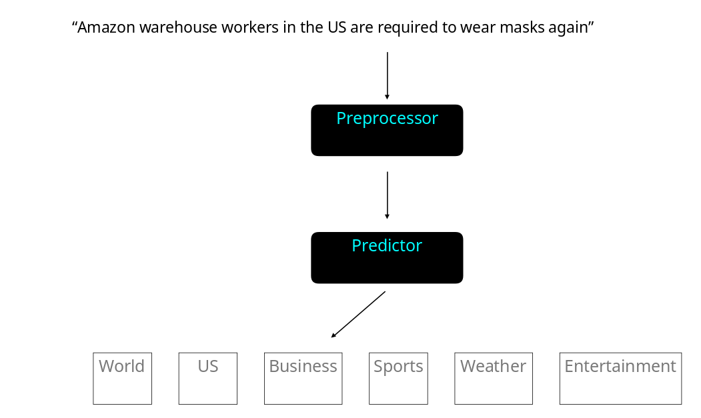
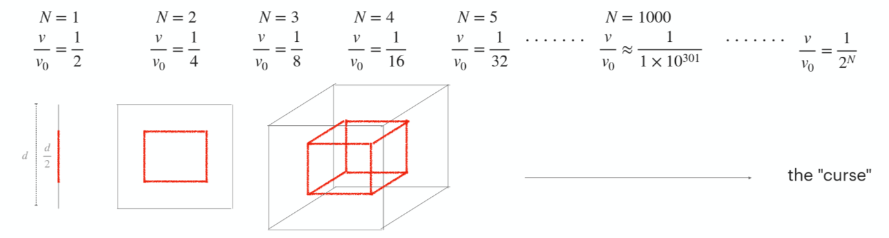
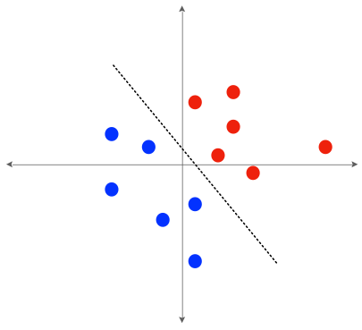
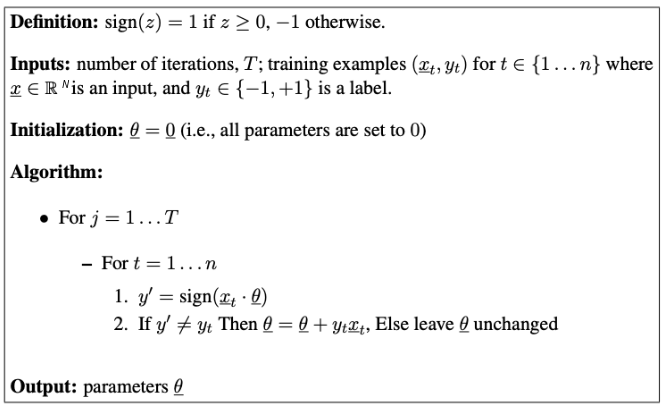
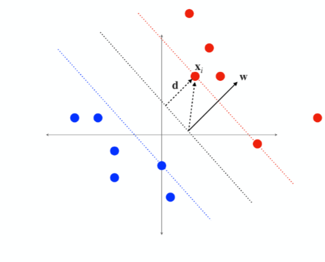

class: center, middle # Natural Language Processing #### Lecture 02 Text Classification Part I <br/> Georgetown University Fall 2022 --- ## Lesson plan - Lecture - Feature representation / Bag of Words (BOW) - Linear decision boundaries - The curse of dimensionality - Perceptron - Linear support vector machine (SVM) - Lab - Text normalization - Introduction to spacy --- ## What is text classification? <figure>  </figure> -- #### Three important questions -- - How do we represent text? -- - How do we represent a set of categories? -- - How do we model the relationship between text and a set of categories? --- ## Text representation -- - A primary goal of this course is to discover the statistical machine learning approaches that have enabled machines to understand natural language. As we will see, an important consideration is how the underlying input text gets represented. -- - We will start with the simplest approach: compute a histogram over the words in the vocabulary / lexicon from the data. This is effectively a time-to-frequency domain transformation, and is commonly referred to as the **Bag of Words (BOW)** approach. -- - Creates a *sparse* representation of the input as most words appear very infrequently (c.f. Zipf's Law). - Removes the sequential information contained in text. Viewing text in the word frequency domain is highly lossy because *meaning* is derived from both the meaning of the constituent words and the order/context in which they appear. -- #### Bag of Words example - TEXT: *"tom and jane both liked dune and the matrix"* - BOW: ```json {"and": 2, "both": 1, "dune": 1, "jane": 1, "liked": 1, "matrix": 1, "the": 1, "tom": 1} ``` <br/> -- [demo](https://github.com/GU-ANLY-580-NLP/ANLY-580/tree/main/lectures/lecture-02/bow-demo.ipynb) --- ## Label representation <br/> Class labels (or *categories*) can be represented in one of two ways: <br/> 1. **One-hot encoding**: $$ \textbf{y} \in \\{ 0,1 \\}^{K} \quad \text{where} \quad \sum\_{j=0}^{K-1} \text{y}\_j = 1 $$ 2. **Scalar**: $$ \text{y} \in \text{Y} \quad \text{where} \quad | \text{Y} | = K $$ <br/> where \\( Y \\) is a label set, and \\( K \\) represents the number of labels in that set (i.e., categories) --- ## The curse of dimensionality In high dimensional space, volume is concentrated at the boundaries. Because we are humans that live in three dimensions, most of us don't realize this. In higher dimensional spaces this has important implications, one of which is that that the presence of a linearly separating hyperplane becomes increasingly probable for $N >> 3$. -- #### Intuition Given a hypercube $\in \mathbb{R}^N$ with sides of length $d$, what fraction its volume is occupied by the inner hypercube with sides $d/2$? <br/> --  --- ## Decision boundary classification Classification can be approached from the perspective of building a decision boundary that separates the data in the (potentially transformed) input space according to some logical grouping, whereby each *group* corresponds to a unique class label. #### Problem formulation Labels: $ \text{y} \in \text{Y} $ Inputs: $ \textbf{x} \in \mathbb{R}^{1 \times N} $ Hyperplane weights: $ \textbf{w} \in \mathbb{R}^{1 \times N} $ Decision boundary: $ \text{H} = \\{ \textbf{x} : \textbf{x}\textbf{w}^{T} + \text{b} = 0 \\} $ Decision function $g(\cdot) \rightarrow \text{Y}$: $ \hat{\text{y}} = g(\textbf{x}\textbf{w}^{T} + \text{b}) $ <figure style='position:fixed; right:-5%; bottom:30%'>  </figure> <br/> -- #### Useful trick Equivalent decision boundary: $\text{H} = \\{ \textbf{x'} : \textbf{x'}\textbf{w'}^{T} = 0 \\}$ by *unsqueezing* $\bf{x}$: $\textbf{x'} = [ 1, \bf{x} ] \in \mathbb{R}^{1 \times (N + 1)}$ and moving $\text{b}$ into $\bf{w}$: $\textbf{w'} = [ \text{b}, \bf{w} ] \in \mathbb{R}^{1 \times (N + 1)}$ --- ## The Perceptron - Ideated by [Frank Rosenblatt](https://en.wikipedia.org/wiki/Frank_Rosenblatt) in the 1950's. Predecessor to the neural network. -- - Learns a hyperplane, $\textbf{w}$, through trial and error -- - Update rule: $ \textbf{w} \leftarrow \textbf{w} + \text{y}\_{i}\textbf{x}\_{i} $ -- - Convergence guaranteed given linear seperability assumption (which is a reasonable one) -- <figure>  <font size="1"> <figcaption style="text-align: center"> Taken from Collins, <i>Convergence Proof for the Perceptron Algorithm</i> (2012) </figcaption> </font> </figure> -- - [demo](https://github.com/GU-ANLY-580-NLP/ANLY-580/tree/main/lectures/lecture-02/perceptron-demo.ipynb) --- ## Linear Support Vector Machine (SVM)  -- 1. Like any linear decision boundary problem, the hyperplane is expressed as a vector, $ \mathbf{w} $, that is orthogonal to the decision boundary, and a bias, $\text{b}$, expressing its distance from the origin. -- 2. Unlike the perceptron, the objective of an SVM is to find *the* separating hyperplane that maximizes the margin between itself and the nearest data points on either side. We call this a *maximum margin classifier*. -- 3. The distance separating a data point from the hyperplane can be given by: -- $$ \|| \textbf{d} \||\_{2} = \frac{\textbf{x}\textbf{w}^T + \text{b}}{ \|| \textbf{w} \||^2 } $$ --- ## Linear SVM: learning objective Combining the perceptron decision function, $g(\cdot)$, with our expression for $||\text{d}||\_{2}$ gives a reasonable starting objective: $$ \underset{ \textbf{w} }{\max} \bigg[ \underset{ i \in \\{1, \dots, M \\} }{\min} \frac{ \text{y}\_{i} \textbf{x}\_{i}\textbf{w}^{T} }{|| \textbf{w} ||\_{2}} \bigg] $$ -- This is problematic: no unique solution for $ \bf{w} $ -- Our fix is to constrain the quantity $ \text{y}\_{i} \textbf{x}\_{i}\textbf{w}^{T} $ to a fixed value for those point(s) $i$ closest to the hyperplane: $$ \underset{\bf{w}}{\max} \frac{ 1 }{|| \textbf{w} ||\_{2}} \quad s.t. \quad \underset{ i \in \\{1, \dots, M \\} }{\min} \text{y}\_{i} \textbf{x}\_{i}\textbf{w}^{T} = 1 $$ <br/> -- The primal form of the linear SVM can be obtained by switching the above to a minimization problem, and changing the equality constraint to an inequality constraint: $$ \underset{\bf{w}}{\min} || \textbf{w} ||\_{2}^{2} \quad s.t. \quad \text{y}\_{i} \textbf{x}\_{i}\textbf{w}^{T} \geq 1 \quad \forall\_{i \in \\{1, \dots, M \\} } $$ -- or using the original definition of $\textbf{w}, \text{b}$: $$ \underset{\textbf{w}, \text{b}}{\min} || \textbf{w} ||\_{2}^{2} \quad s.t. \quad \text{y}\_{i} \big( \textbf{x}\_{i}\textbf{w}^{T} + \text{b} \big) \geq 1 \quad \forall\_{i \in \\{1, \dots, M \\} } $$ --- ## Linear SVM: non-seperable data This linear SVM formulation can be extended to account for data that is not linearly separable. This is done by introducing slack terms, $\xi\_{i}$, to offset the errors associated with each data point. -- $$ \underset{\textbf{w}, \text{b}}{\min} || \textbf{w} ||\_{2}^{2} + c \sum\_{i=1}^{M} \xi\_{i} \quad s.t. \quad \text{y}\_{i} \big( \textbf{x}\_{i}\textbf{w}^{T} + \text{b} \big) \geq 1 - \xi\_{i} \quad \forall\_{i \in \\{1, \dots, M \\} } $$ where $$ \xi\_{i} = \cases{1 - \text{y}\_i(\textbf{x}\_i \textbf{w}^T + \text{b}) & \text{if} \quad \text{y}\_i(\textbf{x}\_i \textbf{w}^T + \text{b}) \leq 1 \cr 0 & \text{else} } $$ -- reduces to $$ \underset{\textbf{w}, \text{b}}{\min} || \textbf{w} ||\_{2}^{2} + c \sum\_{i=1}^{M} \max \big( 1 - \text{y}\_i(\textbf{x}\_i \textbf{w}^T + \text{b}), 0\big) \\\\ s.t. \quad \\\\ \text{y}\_i(\textbf{x}\_i \textbf{w}^T + \text{b}) \geq 1 - \max \big( 1 - \text{y}\_i(\textbf{x}\_i \textbf{w}^T + \text{b}), 0\big) \quad \forall\_{i \in \\{1, \dots, M \\} } $$ --- class: center, middle # Lab 02 ## Text Normalization --- ## Text normalization -- - Contraction expansion - aren't $\rightarrow$ are not - isn't $\rightarrow$ is not - they'll $\rightarrow$ they will -- - Punctuation and whitespace stripping - "*had, for various reasons, quit*" $\rightarrow$ "*had for various reasons quit*" -- - Capitalization - "*Sara is gregarious*" $\rightarrow$ "*sara is gregarious*" -- - Stop word removal (applies to phrases, too) - **Determiners**: *for, an, nor, but* - **Conjunctions**: *the, a, an, another* - **Prepositions**: *in, under, towards, before* -- *Note: These normalizations are often implemented using regular expressions* --- ## Stemming -- - Stemming is the process of removing suffixes according to a set of rules -- - *Overstemming*: words with different canonical stems map to same root word -- - *Understemming*: words with same canonical stem get mapped to multiple root words -- - In the English langauge, a popular stemming method is *Porter's* algorithm --- ## Lemmatization -- - Whereas stemming simply removes suffixes, lemmatization reduces inflected words to a semantically correct base word, called a *lemma*, that belongs to a particular lexicon. -- - "*goose*" $\rightarrow$ "*goose*" - "*geese*" $\rightarrow$ "*goose*" -- - Whereas stemmers are algorithmic, lemmatizers require memory in order to evaluate semantic relationships between words -- - Common lemmatizer used for the English language is WordNet --- ## Part of Speech (POS) tagging -- - POS tagging is the task of assigning tags to each word in a sentence according to its *part of speech*. - *the quick brown fox jumped over the lazy dog* - DET ADJ ADJ NOUN VERB PREP DET ADJ NOUN -- - The set of tags (i.e., number of *parts*) varies by dataset, application, etc. It can be much larger than the standard set of eight. -- - Used extensively in syntactic parsing, and or word sense disambiguation - *leaves* $\rightarrow$ *leave* (VERB) - *leaves* $\rightarrow$ *leaf* (NOUN) --- ## Tokenization -- - While text normalization is fundamentally a text-to-text transformation, tokenization is the transformation from text to a mathematical representation that a computer can understand. -- - For example, a simple English word-level tokenization might be: - text: "*the quick brown fox jumped over the lazy dog*" - text-array: $[\text{"the"}, \text{"quick"}, \text{"brown"}, \text{"fox"}, \text{"jumped"}, \text{"over"}, \text{"the"}, \text{"lazy"}, \text{"dog"}]$ - token-array: $[7,6,0,2,3,5,7,4,1]$ - token lexicon:$ \\{\text{"brown": 0, "dog": 1, "fox": 2, "jumped": 3, "lazy": 4, "over": 5, "quick": 6, "the": 7 } \\}$ -- - A native python implementation of this might look something like this: ```python #!/bin/python3 raw_text = "the quick brown fox jumped over the lazy dog" segmented_text = raw_text.split(" ") bow = [0 for _ in range(len(set(segmented_text)))] lookup = {token: index for index, token in enumerate(set(segmented_text))} for token in segmented_text: index = lookup[token] bow[index] += 1 print(bow) # [1, 1, 1, 1, 1, 2, 1, 1] print(lookup) # {"jumped": 0, "over": 1, "fox": 2, "dog": 3, "quick": 4, "the": 5, "lazy": 6, "brown": 7} ``` -- - In the modern era of NLP, these imperative level transformations and tokenziation schemes are much more advanced, data-driven, and automated. As a practitioner, you should never being doing this stuff from scratch! --- ## Tokenization cont. - Whitespace tokenization - Segments on whitespace, computes vocab for top-K words, special token assigned to OOV words -- - Character-level tokenization - Segments on characters, simple but often degrades performance on downstream tasks -- - Subword tokenization - Byte-Pair Encoding (BPE): Recursive algorithm that computes common unicode character sequences. Recursion limited by a frequency threshold hyperparameter. -- - WordPiece - Similar to BPE, but normalizes the observed unicode-string frequency by the frequency of its constituent unicode substrings. -- - Unigram Language Model - Starts with a complete vocabulary, and progressively removes tokens that result in the bottom jth-percentile of log likelihood loss when removed -- - SentencePiece - Agnostic to whitespace by including "\s" in the token lexicon. Uses BPE+Unigram tokenization for subword regularization. --- class: center, middle # [Spacy](https://spacy.io/)